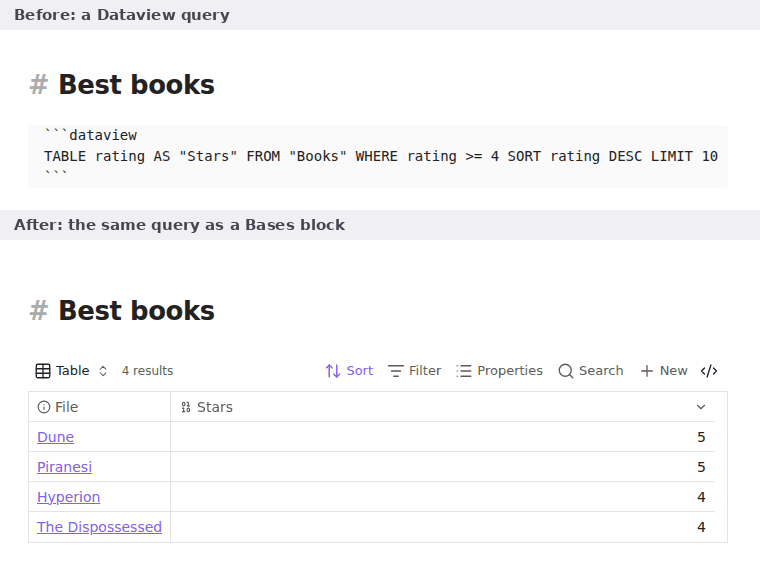

Free Obsidian plugin
Dataview to Bases
Convert Dataview queries into Bases blocks, and report which queries in your vault can be converted.
Install from the Obsidian directory Open in Obsidian Source code and issues

What it does
Convert Dataview queries into Bases blocks, and see which queries in your vault can be converted. A migration helper for people moving off Dataview, which has had no release in over a year, to the Bases core feature.
It also moves Dataview inline fields (status:: done) into properties, so Bases can see them.
It converts the common queries (TABLE, LIST, FROM, WHERE, SORT, LIMIT, GROUP BY) and tells you plainly why it leaves the rest alone. It never converts anything on its own, and the vault scan never edits a note.
Highlights
TABLE(withASaliases andWITHOUT ID) becomes a table view;LISTbecomes a list view.FROMwith folders, files,#tags,[[links]](notes that link to it),[[]](notes that link to this one), andand,or,-/!and parentheses.WHEREwith comparisons,and/or/!,= null, dates (date(today),dur(7 days)) and the common functions:contains,icontains,lower,length,default,choice,startswith,endswith,replace,split,join,round,floor,ceil,abs,min,max,dateformat,striptime,number,linkand a few more.SORTwith several keys,LIMITwith a number,GROUP BYone field.file.name,file.link,file.path,file.folder,file.ext,file.size,file.ctime,file.mtime,file.cday,file.mday,file.tags,file.outlinks,file.inlinksandthis.file.*.- Columns that are not plain properties become formulas, named after what they were.
Details
- Version
- 0.2.0
- Needs Obsidian
- 1.10.0 or newer
- Platforms
- Desktop and mobile
- Author
- Siulved54
- Price
- Free and open source